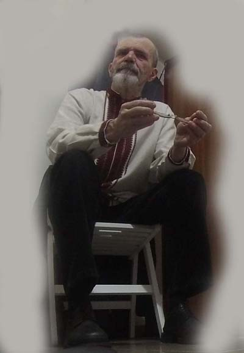
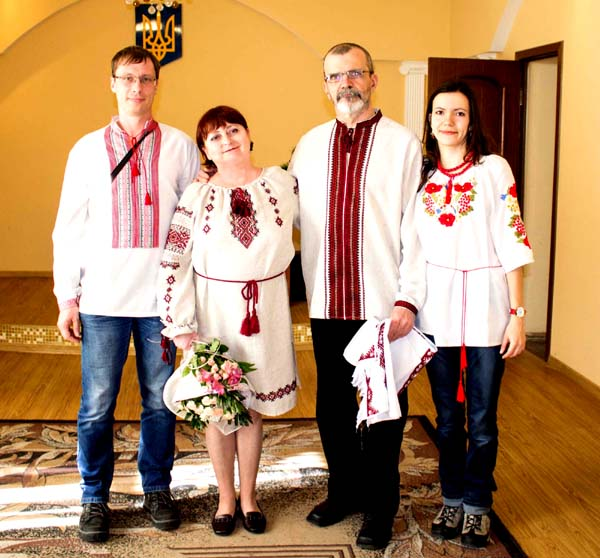
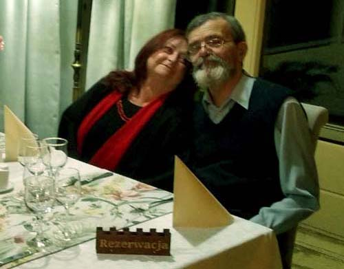
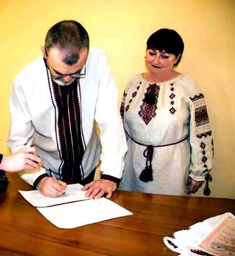
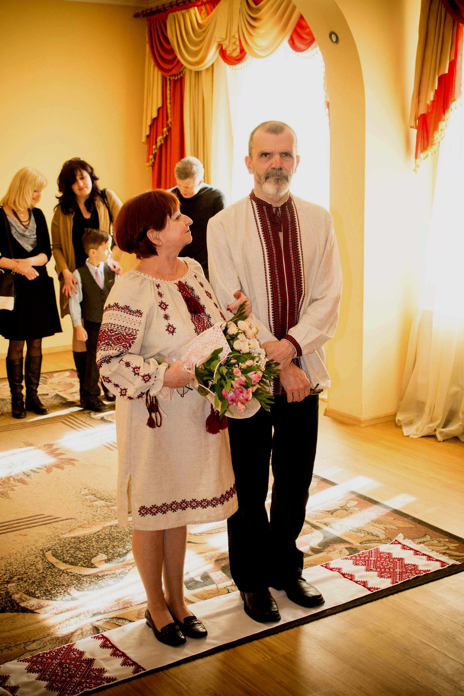
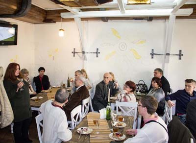
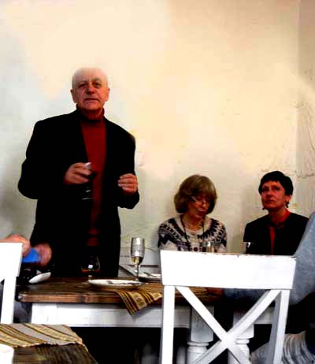
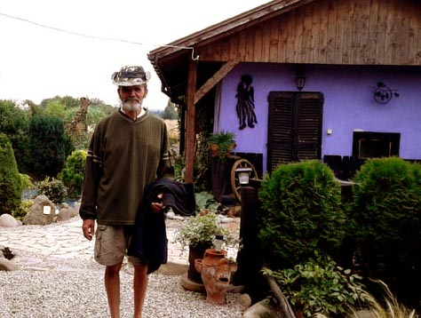

Mimo skłonności do egzaltacji i potrzeby naśladowania coraz to kogoś innego, w głębi duszy najbardziej chciałam być kurą domową. Na dowód tego moja pierwsza w życiu wizytówka taka właśnie była: Zdzisława Zegadłówna, kura domowa. Było to ówcześnie czymś śmiesznym i mało kto doszukał się w tym filozoficznego dna. Może nie ta klientela. Mieszkałam wtedy pod Warszawą, w Zalesiu Górnym, ale większość czasu spędzałam w Warszawie. Tam ktoś inny niż zabiegany artysta uchodził za nieudacznika.
Miałam to gdzieś. Byłam już wtedy autorką zbioru wierszy, sporo też publikowałam, mogłam sobie więc pozwolić na taką ekstrawagancję. Tym bardziej, że wydałam się za poetę i redaktora, a wkrótce i edytora. W tej sytuacji bycie kurą domową tylko ubarwiało mój status.
Moje pierwsze małżeństwo miało sporo mankamentów, co zdarza się na każdym kroku, ale dominowały wtedy zalety.
Za kilka dni znów przyszła wiadomość. Że zasłony już uszyte, uprasowane i powieszone. Usiłowałam drążyć temat, raczej z braku innych niż z ciekawości. Pogadaliśmy przez skypa, ale przypominało to próbę nawiązania kontaktu z kosmitami. Odpuściłam. Ale że w paru zdaniach zająknęłam się na temat mojej moczydelskiej zagrody, postanowiłam na koniec znajomości wrzucić kilka zdjęć, żeby odludek wiedział, co traci.
Zdjęcia, a raczej to, co przedstawiały, wyraźnie spodobały się mojemu anonimowemu koledze. Tematy posypały się jeden za drugim, ale dzieliło na ponad 600 kilometrów, mój kulinarny znajomy mieszkał bowiem w Kijowie. Okazało się jednak, że dawno nie był we Lwowie, i że także jest samotny, bo niedawno zmarła mu ukochana żona, a dzieci mają już swoje rodziny, więc nic nie stoi na przeszkodzie, by przywitać Nowy Rok we Lwowie.
Umówiliśmy się, że przyjedzie pod koniec grudnia, ale bez dokładnego precyzowania, w jaki dzień. Trochę mi to komplikowało sytuację, bo w tym świątecznym czasie byłam umówiona z wieloma osobami na różne dni.
25 grudnia o dziewiątej godzinie zastukała w drzwi apartamentu właścicielka. Powiadomiła mnie, że w korytarzu czeka jakiś mężczyzna i czy ma go wpuścić. Oczywiście, odrzekłam, choć byłam w nocnej koszuli, rozczochrana i niewyspana. W drzwiach stanął wysoki, przystojny mężczyzna z czerwoną, piękną różą i kijowskim tortem. To był Mikołaj.
Spacerowaliśmy potem po Lwowie, rozmawiając o wszystkim, o czym mogą rozmawiać starzy ludzie, którzy zostali bez kochanych towarzyszy życia. Od razu wyszło na jaw, że jesteśmy z dwóch bardzo odległych od siebie planet, a wspólnych tematów trudno się doszukać. Mimo tego spędzaliśmy razem całe dni i ani trochę się nie nudziliśmy. Postanowiliśmy pojechać razem do Kijowa, bo jego córka i zięć zaprosili nas na wieczerzę wigilijną (6 stycznia).
Wspólnych tematów przybywało, a najwięcej dotyczyło życia na wsi. Wybraliśmy się też razem w Karpaty, gdzie Mikołaj jeździł na nartach w górskim kurorcie Bukowel. Bardzo nas ta wyprawa zbliżyła i postanowiliśmy zaryzykować. Było jasne, że Mikołaj przyjedzie do Moczydła, ale potrzebował do tego zaproszenia ode mnie. Musiałam wrócić do Polski, a następnie pojechać do Ukrainy z zaproszeniem. W tym czasie uradziliśmy, że rozumnie będzie, jeśli Mikołaj w Moczydle zostanie na zawsze, a najpraktyczniejszą drogą uniknięcia kłopotów na granicy okazał się ślub.
18 lutego 2016 roku złożyliśmy w lwowskim urzędzie stanu cywilnego niezbędne dokumenty, a 19 marca już byliśmy małżeństwem. Na przyjęcie zaprosiliśmy najbliższych przyjaciół. Oczywiście byli też córka z zięciem. Od tego dnia także moja córka i mój zieć.
Z pozoru absolutnie wszystko nas różni. Mikołaj jest z wykształcenia inżynierem, całe życie pracował jako programista, głównie w banku. Moje twórcze i artystyczne zainteresowania są mu obce, ale bardzo mnie we wszystkim wspiera i to jest najcenniejsze.
Z szacunku do męża postanowiłam zmienić nazwisko. Uważałam, że jeśli on zostawił wszystko i przeprowadził się do Moczydła, by wspierać mnie w niekończącej się pracy w zagrodzie, to i ja mogę zrobić podobnie radykalny krok. I tak zostałam Zdzisławą Vozniuk.
Wróć do początku.





